Cảnh đẹp
Bà Nà Hills
Một trong những điểm đến nổi tiếng tại đây là Bà Nà Hills với hệ thống cáp treo đơn hiện đại và dài nhất thế giới. Được trải nghiệm cảm giác vượt qua quãng đường gần 6000m lên đỉnh núi, thưởng ngoạn vẻ đẹp như trong cổ tích với những công trình Châu Âu thu nhỏ có kiến trúc độc đáo như quảng trường, nhà thờ, thị trấn, làng mạc, khách sạn,...
Nằm ở độ cao 1.414m trên Bà Nà Hills là thiết kế độc đáo "cầu Vàng", một trong những cây cầu được đánh giá có thiết kế lạ và ấn tượng nhất thế giới. Đây cũng tạo nên cơn sốt check in trong giới trẻ yêu du lịch.
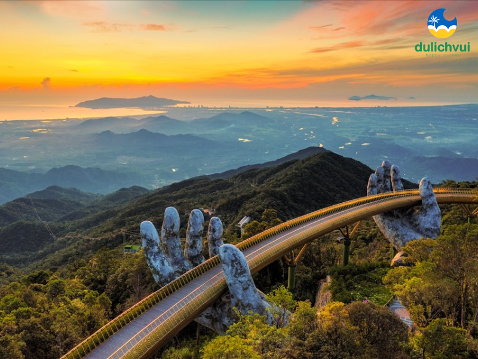
Biển Mỹ Khê
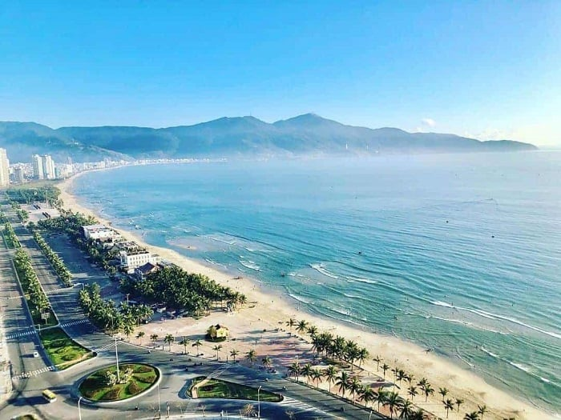
Biển Mỹ Khê từng được tạp chí Forbes bình chọn là một trong 6 bãi biển quyến rũ nhất hành tinh. Bãi biển sở hữu chiều dài 900m với bãi cát phẳng và sóng êm phù hợp để tắm và chơi các môn thể thao trên biển như mô tô nước, lặn biển, lướt ván, Fly Board. Đà Nẵng có một số bãi tắm đẹp nổi tiếng như bãi biển Sơn Trà, bãi biển Bắc Mỹ An, bãi tắm Phạm Văn Đồng, bãi tắm Non Nước, bãi biển Thanh Bình.
Hội An
Phố Cổ Hội An đang là địa điểm thu hút khách tham quan hấp dẫn bậc nhất Quảng Nam nói riêng và miền Trung nói chung. Phố cổ được xây bảo toàn lối kiến trúc cổ điển độc đáo. Đường phố ở khu phố cổ được bố trí ngang dọc theo kiểu bàn cờ với những con phố ngắn và đẹp, uốn lượn, ôm lấy những ngôi nhà. Dạo bước chân qua từng con phố nhỏ xinh và yên bình ấy, du khách không chỉ được thưởng thức những món ăn ngon mà còn thấy được một phần cuộc sống sinh hoạt hàng ngày của người dân phố Hội, một cuộc sống yên bình, giản dị.
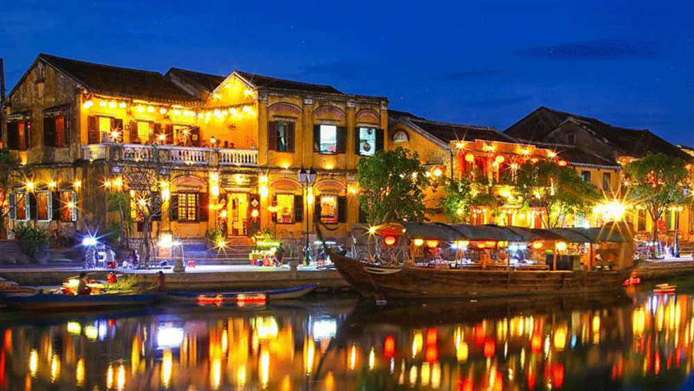
Bán đảo Sơn Trà
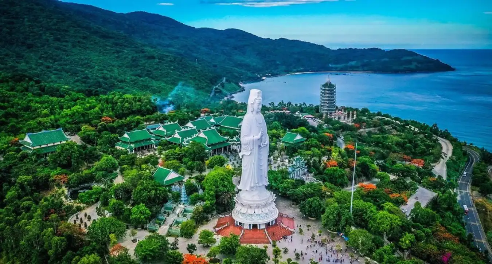
Đây được xem là viên ngọc quý của thành phố Đà Nẵng. Bán đảo Sơn Trà trở thành điểm du lịch hàng năm. Đảo Sơn Trà thuộc địa phận xã Thọ Quang, quận Sơn Trà và cách trung tâm thành phố khoảng 10km về phía Đông Bắc. Nơi đây nổi bật với những đường cong uốn lượn, dọc theo đó là hệ sinh thái động thực vật phong phú và đa dạng.
Sông Hàn
Nếu chỉ có ít thời gian khám phá một con phố ở Đà Nẵng, nhất định bạn phải chọn đến thăm sông Hàn, nơi có Cầu Sông Hàn và Cầu Rồng bắc qua. Bên cạnh sông là con phố Bạch Đằng nhộn nhịp, là Chợ Hàn nơi bạn có bạn có thể mua rất nhiều món ăn vặt ngon miệng để tiếp sức cho hành trình khám phá những cảnh đẹp của thành phố này.
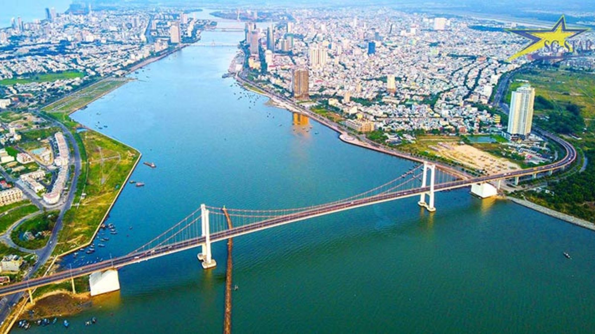
Cầu Rồng
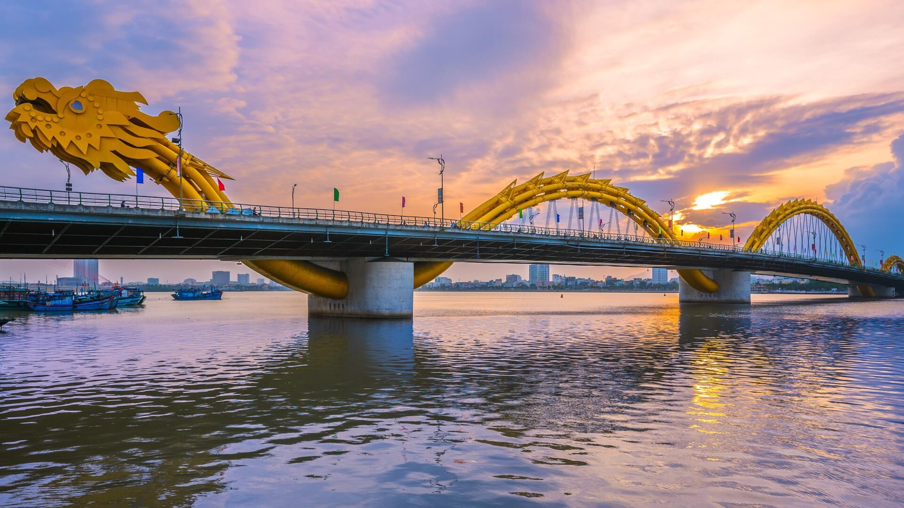
Cầu Rồng Đà Nẵng là một trong những điểm đến không thể bỏ qua. Tới đây, bạn không chỉ được chiêm ngưỡng khung cảnh tuyệt đẹp của dòng sông Hàn, mà còn có cơ hội thưởng thức những màn trình diễn pháo hoa hoành tráng. Theo kinh nghiệm du lịch Đà Nẵng, để xem chương trình phun lửa cầu Rồng, bạn có thể đến cầu vào lúc 9 giời tối thứ 7, chủ nhật hàng tuần.
Ẩm thực
Mì quảng
Một món ăn đặc sắc của xứ Quảng nói chung và thành phố Đà Nẵng nói riêng. Những cọng mì to nhưng mềm dẻo được tráng sơ qua nước sôi, bỏ trong nước vàng nghệ nấu đúng kiểu Quảng, ăn kèm với tôm, gà, trứng và thịt. Vắt một ít chanh, rắc đậu phộng rang, thêm chút bánh tráng mè nướng giòn và rau sống hoặc cải con tươi ngon là trở thành một món ăn làm say lòng biết bao thực khách.
Hiện nay mì quảng được chế biến rất phong phú như mì Quảng sườn non, mì Quảng cá lóc, mì Quảng lươn, mì Quảng chả cua,...
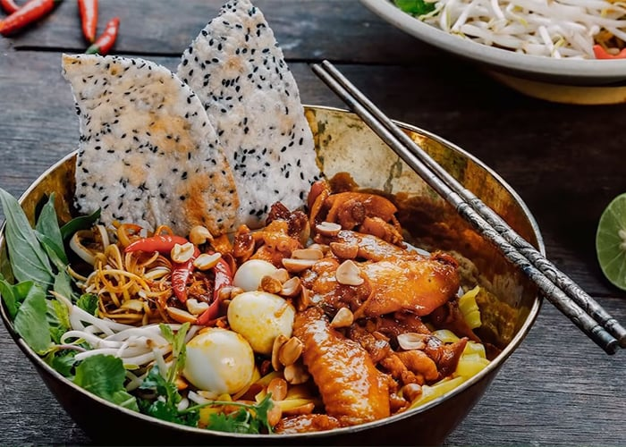
Bánh tráng cuốn thịt heo
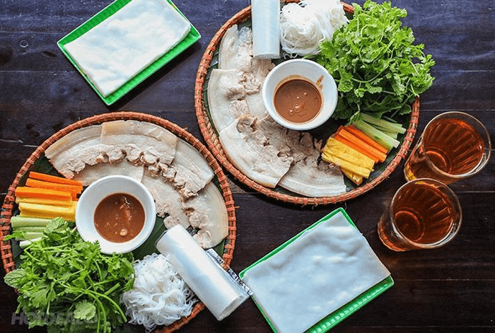
Đây là món ăn dân giã, không quá cầu ký nhưng thắm đượm bản sắc Đà Nẵng. Thịt heo được lựa chọn kỹ từ phần mông hoặc vai, sau đó đem hấp hơi để giữ nguyên vị ngọt. Khi ăn bạn dùng chiếc bánh tráng dẻo, bỏ trên đó ít thịt heo, rau sống, chuối chát,... rồi cuốn lại chấm cùng nước mắm được chế biến đúng vị Đà Nẵng thì thật tuyệt vời.
Bánh xèo
Bánh xèo được làm từ bột gạo xay, trộn thêm lòng đỏ trứng và bột nghệ và đổ trên chảo nóng. Nhân bánh được làm từ tôm tươi, thịt ba chỉ và giá đỗ. Bánh xèo ăn kèm với rau sống, nước tương bùi béo được pha chế từ gan heo và đậu phộng xay và một chén nước mắm ớt tỏi pha theo theo kiểu cách Đà Nẵng.
Hoạt động
Ngắm cầu Rồng phun lửa
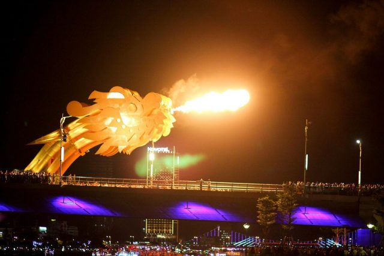
Lịch phun lửa cầu Rồng Đà Nẵng sẽ được diễn ra vào 9 giờ tối thứ 7, chủ nhật hàng tuần và các ngày lễ lớn để phục vụ người dân và khách du lịch.
Tới ngắm cầu Rồng phun lửa, du khách hãy lựa chọn một vị trí phù hợp với tầm nhìn để không không bị che khuất khung cảnh tuyệt đẹp này nhé!
Tắm biển / Đi dạo biển
Nếu bạn muốn đi một trong những bãi biển đẹp nhất hành tinh, ở khách sạn resort sang chảnh, thưởng thức những đặc sản địa phương ngon ngất ngây và hoà mình vào những môn thể thao bãi biển năng động thì không đâu xa, Đà Nẵng có một bãi biển đáp ứng đầy đủ các tiêu chí trên. Đó là bãi biển Mỹ Khê. Vậy nên đi du lịch Đà Nẵng thì đừng quên dành ra 1, 2 ngày tắm biển và đi bộ dọc bãi biển Mỹ Khê bạn nhé!
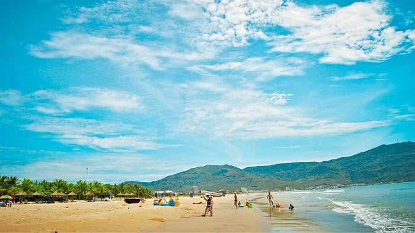
Vui chơi tại công viên Châu Á
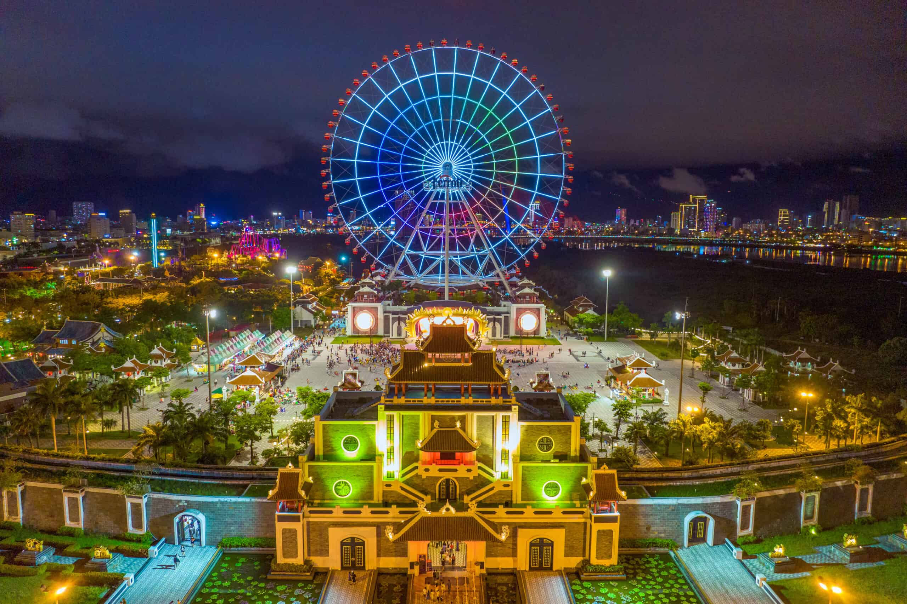
Asia Park là một công viên giải trí có hơn 20 trò chơi khác nhau, với những trò cực kỳ vui nhộn dành cho cả gia đình vui đùa, đến những trò mạo hiểm tự do, tàu lượn siêu tốc, xoay vòng, trượt vòng lốc xoáy khiến ai cũng phải rùng mình bởi cảm giác cực mạnh. Các trò chơi phù hợp với nhiều độ tuổi khác nhau cho du khách trải nghiệm.
Di chuyển
Máy bay
Nếu bạn đang có kế hoạch du lịch Đà Nẵng thì máy bay là lựa chọn hàng đầu, vừa nhanh chóng, vừa an toàn, đặc biệt khi săn được những tấm vé máy bay ưu đãi thì mức giá cũng không quá chênh lệch với giá vé xe khách hay tàu hoả.
Hiện nay chúng tôi khai thác đường bay đến Đà Nẵng với giá vé hấp dẫn như Hà Nội - Đà Nẵng, Hồ Chí Minh - Đà Nẵng, Phú Quốc - Đà Nẵng,... theo hai chiều khứ hồi.

Tàu hoả

Đến với Đà Nẵng, bạn cũng có thể chọn phương tiện tàu hoả, với chuyến tàu Bắc - Nam mỗi ngày hàng chục chuyến từ khắp các tỉnh thành đổ về. Ga Đà Nẵng là một trong những ga quan trọng nhất trên tuyến đường sắt Bắc Nam do là ga đầu mối của khu vực Trung bộ.
Giá vé của tàu hoả Bắc Nam khá linh hoạt, tuỳ thuộc vào chất lượng ghế ngồi mà du khách lựa chọn. Tuy nhiên, đi bằng phương tiện này sẽ mất khá nhiều thời gian và có thể gây khó chịu vì công suất tàu hoạt động khá ồn khi di chuyển.
Ô tô
Bạn cũng có thể đến với thành phố Đà Nẵng bằng ô tô tự lái hoặc xe khách. Tuy nhiên nếu đi xe gia đình chỉ nên đi đoạn đường ngắn, hoặc có ít nhất 2 người thay nhau lái xe vì quãng đường di chuyển dài và nhiều xe đi lại. Thêm vào đó đi bằng ô tô sẽ mất khá nhiều thời gian cho việc di chuyển.